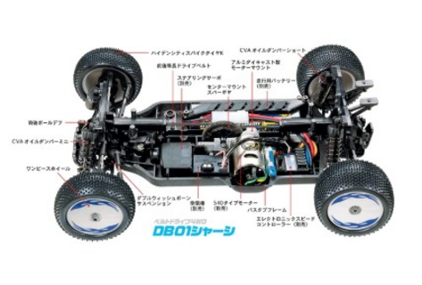

タミヤ DB01 シャーシ（ドゥルガ）

引用元画像：タミヤ公式サイト
📋 基本情報
| メーカー | タミヤ（Tamiya） |
|---|---|
| 機種名 | DB01 シャーシ（ドゥルガ） |
| 型番 | 58395 |
| 発売時期 | 2007年11月20日 |
| 生産状況 | 生産終了（2007年発売） |
| カテゴリー | ラジコンカー（1/10スケール 電動RCカー） |
| サブカテゴリー | オフロードバギー（レース指向モデル） |
📏 シャーシスペック
| 全長 | 395mm |
|---|---|
| 全幅 | 248mm |
| 全高 | 157mm |
| 車体重量 | 1075g |
| ホイールベース | 280mm |
| フレーム | グラスファイバー強化ナイロン樹脂製バスタブフレーム |
⚙️ 駆動系
| 駆動方式 | 等長2ベルトドライブ4WD |
|---|---|
| デフギヤ | ボールデフ（前後標準装備） |
| スパーギヤ | 車体中央配置（86T） |
| モーター | RS540タイプ（別売） |
| ギヤ比 | 8.13:1（23T）/ 11.00:1（17T） |
🔧 サスペンション
| 形式 | 4輪ダブルウィッシュボーン（TRF501Xベース） |
|---|---|
| アッパーアーム | ターンバックル仕様 |
| ダンパー | CVAオイルダンパー |
| ダンパーピボット | アッパー4ヶ所、ロワ3ヶ所 |
| スキッド角調整 | スペーサーで調整可能 |
💡 特徴
TRF501Xの遺伝子を継承
- ハイエンド4WDレーシングバギーTRF501Xの遺伝子を受け継ぐ
- レース指向の電動バギー
- TRF501Xと基本的に同様のサスペンションジオメトリー
等長2ベルト4WD採用
- スパーギヤを車体中央に配置
- 前後ドライブベルトを等長化
- 高効率な駆動システム
- 樹脂パーツでカバーして駆動系を保護
優れた整備性と信頼性
- 前後バルクヘッドとフレーム部品が一体化
- 部品点数を少なくした設計
- メンテナンス性に優れる
- オフロードの小石や土から駆動系を保護
低重心設計
- RCメカと走行バッテリーをフラットに搭載
- 裏面をフルフラット化
- 皿ビス使用で平滑化
- 高いスキッド効果を実現
幅広いセッティング性
- アッパーアームにターンバックル採用
- ダンパーピボット複数配置
- スペーサーでスキッド角調整可能
- 幅広いセッティングに対応
🔧 ぽすとそに工房での修理実績
修理難易度
★★☆☆☆（やや簡単、中級者向け）
よくある故障・注意点
- ボールデフのメンテナンスがやや難しい
- ネジの締め付けがやや硬い箇所がある
- 組み立て説明書で戸惑う箇所がある（初心者向けではない）
- ベルトの張り調整が重要
修理のポイント
- ボールデフの定期的なメンテナンスが必要
- ネジの締めすぎに注意
- ベルトテンションを適切に調整
- ターンバックル式アッパーアームの調整が重要
- グラスファイバー強化樹脂製フレームの取り扱いに注意
その他の特徴
- オフロードコースやカーペットコースに最適
- ダート走行も楽しめる
- 15年以上前のモデルだが安定性が高い
- ノーマルでもある程度の耐久性を持つ
- 競技用として多くのオプションパーツが利用可能
📦 上位モデル：DB01R / DB01 RR / DB01 RRR
DB01には複数の上位モデルが存在します：
- DB01R：オプションパーツを満載したレース仕様
- DB01 RR：角型バッテリー対応、エアレーションダンパー装備
- DB01 RRR：さらなるポテンシャルアップ版
上位モデルは標準装備が充実しており、レース参戦を目指すユーザーに最適です。